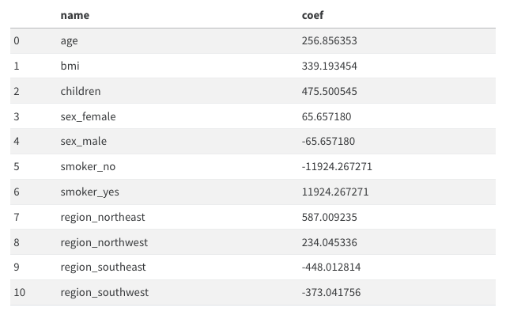
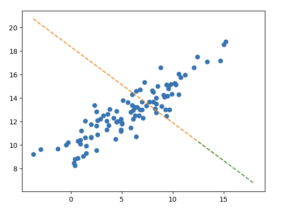

import pandas as pd
import numpy as np
import matplotlib.pyplot as plt
import seaborn as sns
import sklearn.preprocessing
import sklearn.model_selection09wk-mid (ver 1.0)
- True/False를 판단하는 문제는 답만 써도 무방함.
- “자료분석” 문제는 “kaggle style score = 50%”, “분석의 논리 = 50%” 의 배점으로 채점한다.
- “자료분석” 유형의 경우 분석의 논리가 매우 우수하거나, 창의적인 접근법으로 분석을 시도할 경우 가산점을 부여한다. (아이디어 단계에서도 가산점 부여가능) 가산점은 문항점수의 최대 100%까지 부여한다.
- “연구” 문항의 경우 세부문항을 정확하게 수행한 경우에만 100%의 점수를 부여하며 이를 어길시 부분점수를 부여하지 않는다. 연구결과의 시각화나 해석이 우수한 답안은 문항점수의 20%까지 가산점을 부여한다.
1. True/False (50점)
링크를
shift + 클릭하면 새 창으로 열려서 문제 풀기 수월합니다.
(1)-(3): 아래는 kaggle에서 titanic 데이터를 불러오는 코드이다.
df_train=pd.read_csv("/kaggle/input/titanic/train.csv")
df_test=pd.read_csv("/kaggle/input/titanic/test.csv")# !kaggle competitions download -c titanic
# !unzip titanic.zip -d ./titanic
# df_train = pd.read_csv('titanic/train.csv')
# df_test = pd.read_csv('titanic/test.csv')
# !rm titanic.zip
# !rm -rf titanic/(1) 학습을 할 때는 df_train만을 이용하며 df_test는 전혀 사용하지 않는다.
(2) df_train과 df_test의 열의 숫자는 동일하며 행의 숫자만 차이가 난다.
(3) 여성생존자만 모두 생존한다고 가정하면 df_train에서의 accuracy는 78% 이상이다.
(4)-(7) 아래는 모듈4에서 소개한 Alexis Cook의 분석코드이다.
from sklearn.ensemble import RandomForestClassifier
y = train_data["Survived"]
features = ["Pclass", "Sex", "SibSp", "Parch"]
X = pd.get_dummies(train_data[features])
X_test = pd.get_dummies(test_data[features])
model = RandomForestClassifier(n_estimators=100, max_depth=5, random_state=1)
model.fit(X, y)
predictions = model.predict(X_test)
output = pd.DataFrame({'PassengerId': test_data.PassengerId, 'Survived': predictions})
output.to_csv('submission_AlexisCook.csv', index=False)
print("Your submission was successfully saved!")(4) Alexis Cook의 코드에서는 사용된 설명변수는 [“Pclass”, “Sex”, “SibSp”, “Parch”] 이다.
(5) Alexis Cook의 코드에서는 로지스틱모형을 이용하여 반응변수를 예측하였다.
(6) model.fit(X,y)는 train data를 학습하기 위한 코드이다.
(7) test data에서의 성능을 확인하기 위해서는 아래의 코드를 사용하면 된다.
output.score(X_test,y)(8)-(10) 아래는 모듈8에 소개된 코드중 일부이다.
from autogluon.tabular import TabularDataset, TabularPredictor
# load data
...
...
# analysis
predictr = TabularPredictor("Survived")
predictr.fit(df_train,presets='best_quality')
(df_train.Survived == predictr.predict(df_train)).mean()(8) 위의 코드에서 반응변수는 “Survived”로 설정하였다.
(9) predictr.fit(df_train,presets='best_quality')은 train data를 학습하는 단계이다.
(10) (df_train.Survived == predictr.predict(df_train)).mean()은 모형의 성능을 train data에서 검증하는 단계이다.
(11)-(14) 아래는 모듈11에 제시된 데이터프레임으로 선형모형의 계수값을 표현한 것이다.

(11) 여성은 남성보다 평균적으로 보험료를 65.657180 만큼 더 낸다고 해석할 수 있다.
(12) 나이가 1살 증가하면 보험료가 평균 256.856353 만큼 증가한다고 해석할 수 있다.
(13) 보험료를 상대적으로 많이 내는 지역과 그렇지 않은 지역이 존재한다.
(14) 흡연유무는 성별보다 보험료에 미치는 영향이 크다.
(15)-(19) 아래는 모듈13에 대한 설명이다.
(15) 4.분석-실패에서 아래와 같은 에러메시지가 나오는 이유는 train data에 결측치가 포함되어 있기 때문이다.

(16) 결측치가 하나라도 포함된 모든 열을 제거한다면 에러메시지를 피할수는 있겠으나 오버피팅이 발생할 가능성이 있다.
(17) 따라서 결측치를 하나라도 포함된 모든 열을 제거한뒤 Lasso를 쓰면 오버피팅을 피할 수 있다.
(18) 결측치가 존재할 경우, 결측치가 있는 열을 제외하고 분석하는 것이 유일한 해결방법은 아니다. 예를들면 결측치를 적당한 값으로 impute한 뒤 분석할 수도 있다.
(19) train data와 test data에서 결측치가 포함된 행을 모두 제거한 뒤, train data 를 이용하여 적합을 시키고 test data 에서 예측한뒤 제출하는 것도 가능한 분석방법 중 하나이다. 즉 아래와 같은 의사코드는 가능한 분석방법 중 하나이다.
df_train = 결측치가 포함된 행이 제거된 train data
df_test = 결측치가 포함된 행이 제거된 test data
X,y = df_train 을 적당히 잘 정리한 자료의 튜플형태
XX = df_test 를 적당히 잘 정리한 자료
predictr = sklearn.linear_model.LogisticRegression()
predictr.fit(X,y)
submission = predictr.predict(XX)의 값을 적당히 제출용으로 정리하여 만든 df(20)-(24) 아래는 모듈19, 모듈20 에 대한 설명이다.
(20) sklearn.preprocessing.MinMaxScaler()를 이용하여 스케일러를 생성하고 train data에 .fit_transform() method를 적용하면 항상 \([0,1]\) 사이의 값이 나온다.
(21) sklearn.preprocessing.MinMaxScaler()를 이용하여 스케일러는 .inverse_transform() method를 가지고 있으며 이는 변환된 값을 원래로 되돌리는 역할을 한다.
(22) sklearn.preprocessing.StandardScaler()는 데이터의 평균을 0, 표준편차를 1로 만드는 방식으로 조정한다.
(23) 만약에 train data와 test data로 나누어진 상황에서 스케일러를 이용하여 데이터를 변환하려면 아래와 같은 순서를 따르는 것이 하나의 방법이다.
- 적당한 scaler 생성이후 train data 를 입력으로 넣고
.fit_transform()method 사용 - 1과 동일한 scaler에 test data 를 입력으로 넣고
.transform()method 사용
(24) (23)과 동일한 상황에서 아래와 같은 변환도 해법이 될 수 있다.
- 적당한 scaler 생성이후 train data, test data를 합쳐서 입력으로 넣고
.fit_transform()method 사용
(25)-(26) 아래는 모듈21 에 대한 설명이다.
(25) 밸런스게임을 통하여 많은 변수를 모을수록 train data 에 대한 score를 올릴 수 있다.
(26) 이 모듈의 예시는 불필요한 변수의 추가가 오히려 학습에 방해되어 test score를 낮추는 현상이 생길 수 있음을 시사한다.
(27)-(33) 아래는 모듈22 에 대한 설명이다.
(27) 이 모듈의 데이터에서 toeic과 toeic0의 상관계수값은 매우 높게 나올 것이다.
(28) 이 모듈의 데이터에서 모든변수를 넣고 적합한다면,toeic, toeic0, ... ,toeic499에 적합된 계수값의 합은 0.01 정도의 값을 가진다.
(29) 이 모듈의 데이터에서 gpa와 toeic만을 남기고 나머지 변수를 제거한뒤 돌리면 test score가 향상된다.
(30) 즉 이 모듈의 데이터는 변수를 제거할수록 test score가 향상된다. 예를들면 gpa를 제거하여도 test score가 향상된다.
(31) 이 예제에서 train score는 모든 데이터를 사용하여 적합하였을 경우 가장 높게 나타난다.
(32) toeic, toeic1부터 toeic499까지의 변수들은 모두 employment_score와 높은 상관계수를 보인다.
(33) 모듈22에 소개된 현상을 다중공선성이라고 말하며 이때는 계수값의 해석이 용이하지 않다.
(34)-(38) 아래는 다중공선성과 Rigde, Lasso에 대한 종합적인 설명이다.
(34) 다중공선성이 발생할 경우 올바른 변수선택으로 언제나 문제를 해결할 수 있다.
(35) 다중공선성이 발생할 경우 \({\bf X}\)의 correlation matrix는 단위행렬에 가깝게 나온다.
(36) 다중공선성이 발생한다면 Ridge, Lasso와 같은 방법을 이용하여 해결할 수 있다.
(37) 관측치의 수가 매우커진다면 (즉 데이터프레임에서 행의 숫자가 매우 커진다면) 다중공선성 문제가 심화될 가능성이 있다.
(38) 다중공선성을 아래와 같은 시각화 코드로 진단할 수 있는 경우가 있다.
sns.heatmap(df_train.corr(),annot=True)(39)-(42) 아래는 모듈23 에 대한 설명이다.
(39) toeic, toiec0, …, toeic499 에 대응하는 계수값의 합은 \(\alpha\) 와 관련없이 항상 일정하다.
(40) 이 모듈에서 큰 \(\alpha\)는 토익계수들의 값을 점점 비슷하게 만들어 주는 효과가 있다.
(41) toeic, toiec0, …, toeic499 에 대응하는 계수값들의 분산은 \(\alpha\)가 커짐에 따라 점점 작아진다.
(42) \(\alpha\)를 매우 잘 선택한다면 모듈23-4.True 에서 소개된 바와 같이 적절한 변수선택을 할 수 있다.
(43)-(44) 아래는 모듈25 에 대한 설명이다.
(43) \(\alpha\)가 커질수록 0이 아닌 계수값의 수는 점점 증가한다.
(44) Lasso를 사용하면, 토익과 유사한 변수의 수가 증가할수록 test_score가 좋아진다.
(45)-(47) 아래는 모듈27 에 대한 설명이다.
(45) 강의교재에 소개된 아래의 그림은 train score 보다 test score 가 낮은 상황이다.

(46) 하지만 이러한 적합결과가 오버피팅이라고 보기는 어렵다.
(47) 아웃라이어를 제거한다면 선형모형의 df_train, df_test에 대한 score가 모두 상승할 것이다.
(48)-(50) 아래는 모듈29에 대한 설명이다.
(48) 모듈29, 4.분석에 소개된 아래와 같은 모형은
- \({\bf X}\):
Supplement,Exercise,Supplement\(\times\)Exercise - \({\bf y}\):
Weight_Loss
운동을 했으며, 보조제를 사용한 경우에 발생하는 추가적인 효과를 고려할 수 있다.
(49) 이처럼 두 종류 이상의 범주형 범수가 존재하는 경우 범주형 범수간의 교호작용을 항상 고려해야 모형의 성능을 올릴 수 있다.
(50) 실제로 교호작용이 있지만 이를 고려하지 않아서 모형의 성능이 떨어지는 경우는 언터피팅의 일종으로 볼 수 있다.
2. 자료분석 (30점)
(1) 아래의 자료를 해석하고 세부지침에 맞추어 분석하라.
df_train = pd.read_csv('https://raw.githubusercontent.com/guebin/MP2023/master/posts/mid/icesales_train.csv')
df_test = pd.read_csv('https://raw.githubusercontent.com/guebin/MP2023/master/posts/mid/icesales_test.csv')세부지침
- 반응변수 \({\bf y}\)를
sales로 설정하고 나머지는 설명변수로 설정하라. df_test에sales에 대한 예측값을 포함하는 열을 추가하라.
(2) 아래의 자료를 해석하고 세부지침에 맞추어 분석하라.
df_train = pd.read_csv('https://raw.githubusercontent.com/guebin/MP2023/master/posts/mid/height_train.csv')
df_test = pd.read_csv('https://raw.githubusercontent.com/guebin/MP2023/master/posts/mid/height_test.csv')세부지침
- 반응변수 \({\bf y}\)를
height로 설정하고 나머지는 설명변수로 설정하라. df_test에height에 대한 예측값을 포함하는 열을 추가하라.
(3) 아래의 자료를 해석하고 세부지침에 맞추어 분석하라.
df_train = pd.read_csv('https://raw.githubusercontent.com/guebin/MP2023/master/posts/mid/synthetic_train.csv')
df_test = pd.read_csv('https://raw.githubusercontent.com/guebin/MP2023/master/posts/mid/synthetic_test.csv')세부지침
- 반응변수 \({\bf y}\)를
y로 설정하고 나머지X1,X2,X3,X4는 설명변수로 설정하라. df_test에y에 대한 예측값을 포함하는 열을 추가하라.
3. 연구 (20점)
아래의 코드를 이용하여 자료를 불러오라.
np.random.seed(42)
df = pd.read_csv("https://raw.githubusercontent.com/guebin/MP2023/main/posts/employment_multicollinearity.csv")
df['employment_score'] = df.gpa * 1.0 + df.toeic* 1/100 + np.random.randn(500)
df_train, df_test = sklearn.model_selection.train_test_split(df,test_size=0.3,random_state=42)아래의 절차에 따라 자료를 연구하라. 결과를 해석하라.
- 종속변수 \({\bf y}\)를
employment_score로 설정하고 나머지는 설명변수로 설정하라. sklearn.linear_model.Ridge를 이용하여 \(\alpha = [10^1, 10^{1.5}, 10^2, 10^{2.5}, \dots, 10^{9}]\)에 대해 predictor를 생성하라.- \(\alpha\)의 변화에 따른 train score 와 test score 의 변화를 시각화하라.
- \(\alpha\)에 변화에 따른
predictor가 학습한 coefficient값 (predictor.coef_) 들의 분산변화와 L2-penalty를 시각화하라.
구현시 20점, 결과해석이 추가되면 가산점 4점